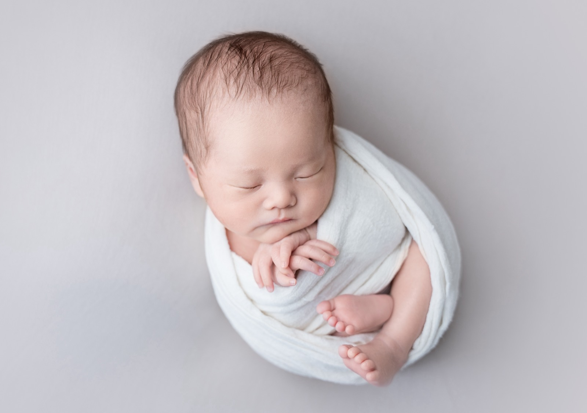

トップに戻る
Photographer
arisa

出産は、当たり前ではなく奇跡。
赤ちゃんの小ささだけでなく、妊娠・出産を頑張った時間ごと、
家族の宝物として一緒に残したいと思っています。


Profile
- 名前
- arisa
- 出身
- 佐賀県
- 活動拠点
- 福岡県久留米市（ご自宅への出張撮影）
- 対応エリア
- 福岡・佐賀・大分・熊本
久留米市周辺を中心に対応します。エリアに応じて交通費を頂戴します。 - 資格
- 看護師／保健師／FP2級／日本化粧品検定1級
- 家族
- 2児の母
- カメラ歴
- 趣味を含めて10年以上
- 趣味・好きなもの
- 子どもの写真を撮ること、カフェ巡り
- 撮影ジャンル
- ニューボーン・マタニティ・お宮参り・アニバーサリー
History
- 2013
看護師として働き始める
多くの命と時間に寄り添う日々をスタート。（〜2020年）
- 2014
カメラを持ち始める
「きれいな風景を残したい」とミラーレスカメラを購入。写真を撮る楽しさに夢中になる。

- 2020
第一子を出産
早産で、NICU・GCUで過ごす日々を経験。小さな命の愛おしさと、その時間を写真に残すことの大切さを実感し、ニューボーンフォトを志すきっかけに。

- 2023
ニューボーンフォトを始める
看護師として働きながら、ニューボーンフォトの撮影をスタート。（看護師勤務 〜2024年）

- 2024
第二子を出産
出産後、看護師をやめ、ニューボーンフォトに専念。2児の母として、産後のママの体と心に寄り添う撮影を大切にしています。

- 現在
arisa newborn photo として活動
Our Care
ご自宅で撮影
外出準備や移動の負担を減らし、産後のママと赤ちゃんのペースを大切にします。
安全を最優先に
看護師・2児の母の経験を活かし、赤ちゃんの体調を見ながら無理なポーズは行わず、安全に進めます。
シンプルに残す
白を基調に、10年後も見返したくなる、ありのままの写真を大切にしています。